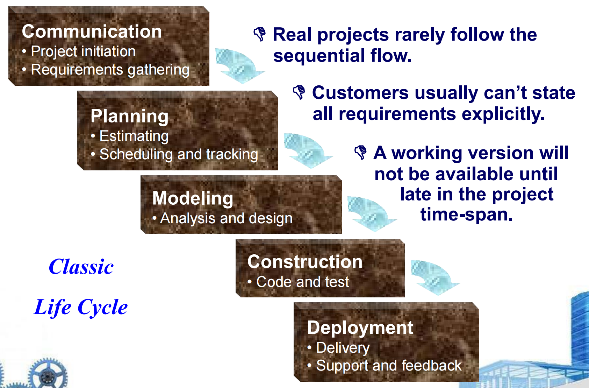
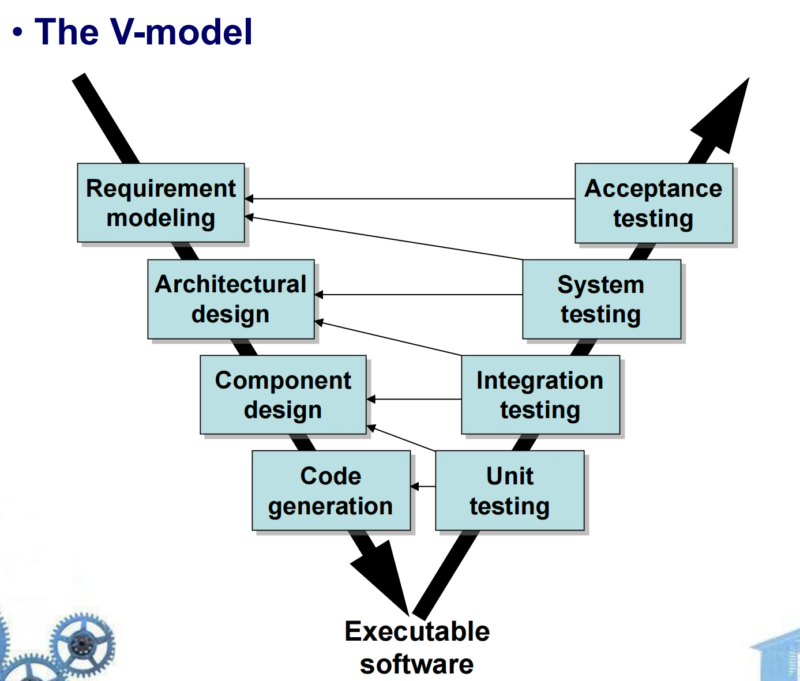
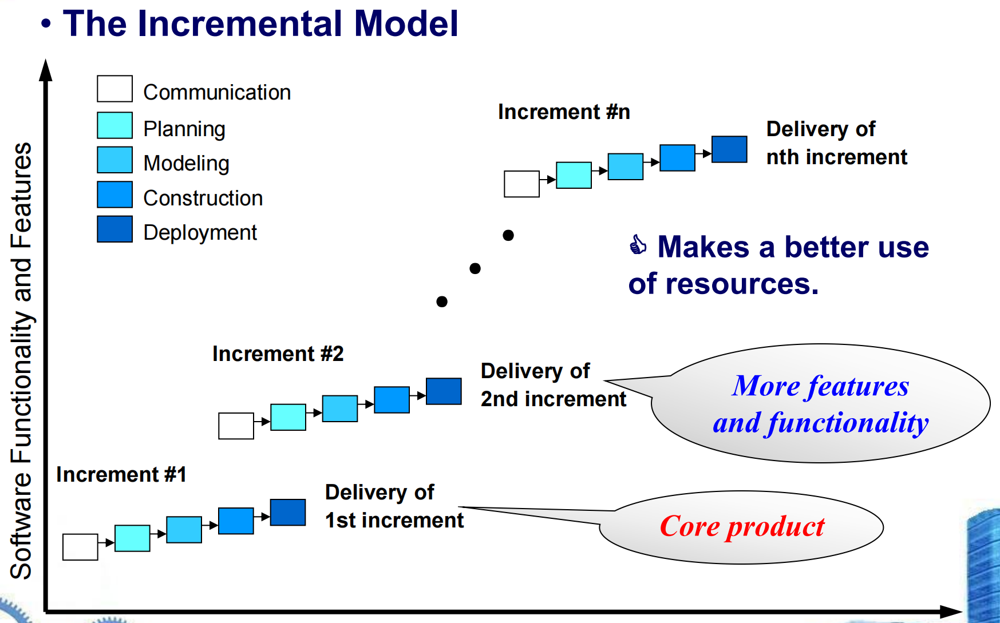
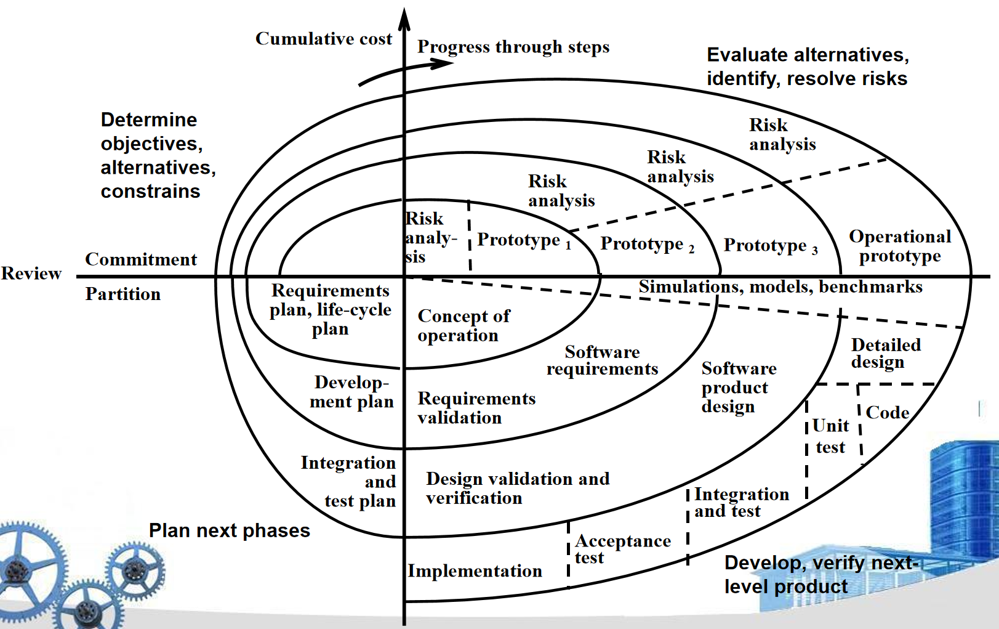
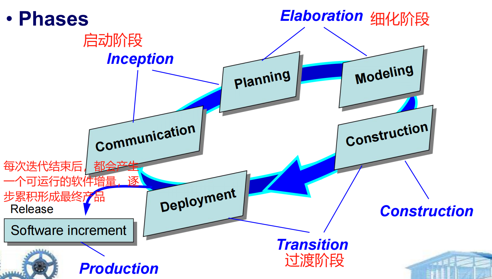
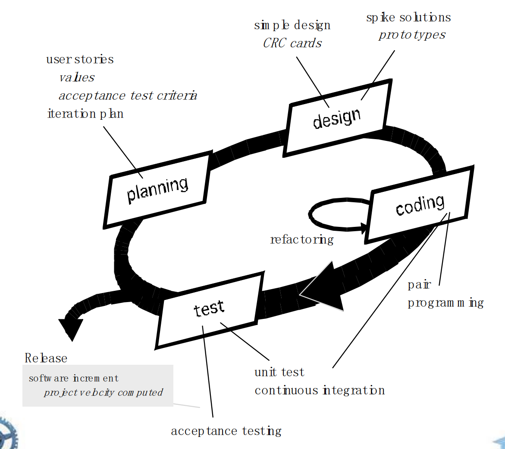
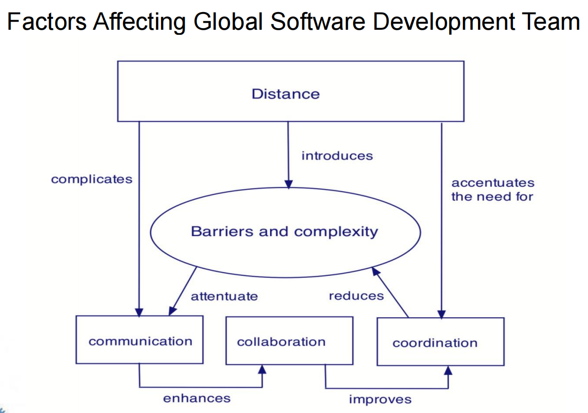
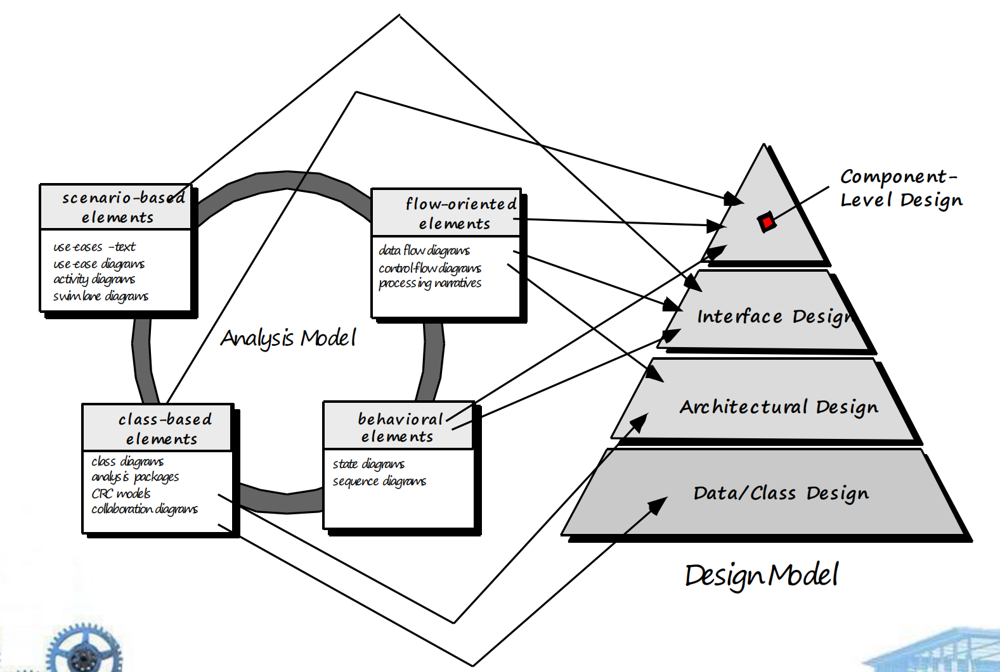

# Ch2 Software Engineering
- Definition: The application of a systematic, disciplined, quantifiable（可量化） approach to the development, operation, and maintenance of software
- 软件工程是一个多层次的技术体系 (a layered technology)
- 从下往上是 a “quality” focus, process model, methods, tools, 反映了构建高质量软件产品的逻辑流程
- 软件过程（The Software Process）中的两个重要概念：通用过程框架（Common Process Framework）和 伞形活动（Umbrella Activities）
- 通用过程框架（Common Process Framework）： 软件开发过程中的一些基本要素
- 工作任务（work tasks）：指在软件开发的不同阶段中需要完成的具体任务。
- 工作产品（work products）：指在执行工作任务过程中产生的各种文档、代码等成果物。
- 里程碑与交付物（milestones & deliverables）：里程碑是项目进展的重要节点，而交付物是在这些节点上需要提交的成果。
- 质量保证检查点（QA checkpoints）：在整个开发过程中设置的检查点，用于评估和确保软件产品的质量。
- 伞形活动（Umbrella Activities）：软件开发过程中需要执行的活动
- 项目管理（Project management）：负责项目的规划、组织、协调和控制，确保项目按计划进行。
- 质量保证（Quality assurance）：通过一系列措施确保软件产品的质量符合预定标准。
- 工作产品生产（Work product production）：涉及创建和维护软件开发过程中产生的各种工作产品。
- 测量（Measurement）：收集和分析数据以评估项目的状态和进度。
- 正式技术评审（Formal technical reviews）：对软件的技术设计和实现进行系统性的审查。
- 配置管理（Configuration management）：管理软件开发过程中各种配置项的变化，确保版本的一致性和可追溯性。
- 重用管理（Reusability management）：促进软件组件和模块的重用，提高开发效率和软件质量。
- 风险管理（Risk management）：识别、评估和应对可能影响项目成功的各种风险。
- 通用过程框架（Common Process Framework）： 软件开发过程中的一些基本要素
- Generic Process Framework 通用的软件开发过程框架
- Communication: 与客户协作并收集需求
- Planning: establishes engineering work plan, describes technical risks, lists resource requirements, work products produced, and defines work schedule
- Modeling: 创建模型以帮助开发者和客户理解需求和设计
- Construction: code & test
- Deployment: 交付软件供客户评估和反馈
- Process Adaptation 过程适配：根据项目的具体需求、限制条件和特点，对软件开发过程进行定制和调整
- overall flow of activities, actions, and tasks and the interdependencies among them
- degree to which actions and tasks are defined within each framework activity
- degree to which work products are identified and required
- manner which quality assurance activities are applied
- manner in which project tracking and control activities are applied
- overall degree of detail and rigor with which the process is described
- degree to which the customer and other stakeholders are involved with the project
- level of autonomy given to the software team
- degree to which team organization and roles are prescribed
- The Essence of Practice
- Understand the problem (communication and analysis).
- Plan a solution (modeling and software design).
- Carry out the plan (code generation).
- Examine the result for accuracy (testing and quality assurance).
- General Principles 通用原则：软件开发过程中应遵循的一些核心指导思想或基本原则
- The reason it all exists — Provide Value to users
- KISS — Keep It Simple, Stupid!
- Maintain the Vision
- What you produce, others will consume
- Be open to the future
- Plan ahead for reuse
- Think!
- Software Development Myths 软件开发管理中常见的误解（Myth）及其背后的现实情况（Reality）
- Management myths
- 标准和流程的有效性依赖于团队的理解和接受程度。
- 软件开发是一个高度协作和复杂的创造性过程，简单地增加人力并不能解决进度问题。
- 外包项目同样需要良好的管理和沟通能力，不能因为外包就忽视了对项目的控制和监督
- Customer myths
- 详细的需求分析和规划
- 充分的沟通与确认
- 合理的进度评估
- Practitioner’s myths
- 错误：一旦我们编写好程序并使其正常运行，我们的工作就完成了
- 过早进入编码阶段可能会导致更多的返工和调整，从而延长项目周期
- Management myths
# Ch3 Software Process Structure
Umbrella Activities 是贯穿整个软件开发过程的活动，Framework Activity 是软件开发的核心阶段，如沟通、计划、建模、构建和部署，每个框架活动下都有具体的 task set，每个 task set 中又包含多个具体的 action
-
Process flow 过程流（对于之前提到的 Generic Process Framework 的五步）
- 线性过程流（Linear process flow）
- 迭代过程流（Iterative process flow）
- 演化过程流（Evolutionary process flow）
- 并行过程流（Parallel process flow）
-
Process Patterns 过程模式
Process patterns define a set of activities, actions, work tasks, work products and/or related behaviors
提供了一种template用于定义模式
Generic software pattern elements: -
pattern name
-
Intent (objective of pattern)
-
Type (Task pattern, Stage pattern, Phase pattern)
-
Initial context
-
Solution
-
Resulting context
-
Related patterns
-
Known uses/examples
-
Process Assessment
几种评估软件过程的方法：
SCAMPI (Standard CMMI Appraisal Method for Process Improvement)
SPICE (ISO/IEC 15504)
CBA IPI (Capability Benchmarking Appraisal using the Integrated Process Improvement method)
ISO 9001:2000 for Software -
The Capability Maturity Model Integration 能力成熟度模型集成（CMMI）
- Level 0: Incomplete
- Level 1: Performed
- Level 2: Managed
- Level 3: Defined
- Level 4: Quantitatively Managed 定量管理
- Level 5: Optimizing
# Ch4 Process Models
# Prescriptive Models
Prescriptive (规范的) process models advocate an orderly approach to software engineering
- The Waterfall Model: A reasonable approach when requirements are well defined
 - The V Model
 - Incremental Process Models 增量过程模型
- The Incremental Model 增量模型：将整个系统划分为多个可交付的 “增量” 部分，每个增量都作为一个独立的小项目进行五步流程: A good approach when a working core product is required quickly

- The Rapid Application Development (RAD) Model 快速应用开发模型：短时间内交付功能完善的系统，communication 和 planning 之后分成好几个 team 进行 modeling 和 construction，最后合并 deployment

- The Incremental Model 增量模型：将整个系统划分为多个可交付的 “增量” 部分，每个增量都作为一个独立的小项目进行五步流程: A good approach when a working core product is required quickly
- Evolutionary Process Models 进化式过程模型
- Prototyping 原型化方法：当客户有明确的需求但不清楚具体细节时，通过原型，客户可以直观地看到系统的雏形并提出修改意见；原型通常是 “抛弃型” 的，即在验证概念后会被丢弃，而不是直接作为最终产品的一部分
- Prototype Model: Communication, Quick Plan, Modeling & Quick Design, Construction of prototype, Deployment Delivery & Feedback
- The Spiral Model 螺旋模型：螺旋模型将整个开发过程视为一个逐渐扩大的螺旋线，每个环代表一个开发阶段或迭代周期，在每一次迭代中都进行风险分析（Risk Analysis）
 - The Concurrent Development Model 并行开发模型
- 并行开发模型定义了一系列
事件，这些事件将触发每个活动、动作或任务从一个状态到另一个状态的转换 - Especially good for client/server applications
- 并行开发模型定义了一个活动网络，而不是简单的线性事件序列
- 需要在 Flexibility, Extensibility, Speed of development 和 high quality 中权衡
- 并行开发模型定义了一系列
- Prototyping 原型化方法：当客户有明确的需求但不清楚具体细节时，通过原型，客户可以直观地看到系统的雏形并提出修改意见；原型通常是 “抛弃型” 的，即在验证概念后会被丢弃，而不是直接作为最终产品的一部分

# Specialized Process Models 专业化的软件过程模型
- Component-Based Development （强调 reuse）
- Formal methods （形式化方法强调使用数学手段来精确地描述需求）
- Aspect-Oriented Software Development （面向切面，切面指那些横跨多个模块或功能的通用关注点）
# The Unified Process 统一过程
统一过程是一种 “用例驱动、以架构为中心、迭代和增量” 的软件开发过程
A “use-case driven, architecture-centric, iterative and incremental” software process closely aligned with the Unified Modeling Language (UML)

五个阶段: Inception, Elaboration, Construction, Transition, Production
# 统一过程（Unified Process, UP）在各个阶段产生的工作产品（ Work Products ）
- Inception Phase（启动阶段）
Vision Document（愿景文档）：概述项目的总体目标、范围和预期结果。
Initial Use-case Model（初始用例模型）：描述系统的主要功能和用户交互场景。
Initial Project Glossary（初始项目术语表）：定义项目中使用的专业术语和缩写。
Initial Business Case（初始商业案例）：分析项目的商业价值和可行性。
Initial Risk Assessment（初始风险评估）：识别和评估项目可能面临的风险。
Project Plan Phases and Iterations（项目计划阶段和迭代）：制定项目的整体计划，包括阶段划分和迭代安排。
Business Model（业务模型）：描述项目的业务流程和商业模式。
Prototypes（原型）：创建系统的初步原型，用于验证需求和设计。 - Elaboration Phase（细化阶段）
Use-case Model（用例模型）：进一步完善和细化用例模型，明确系统功能。
Functional and Non-functional Requirements（功能性与非功能性需求）：详细描述系统需要满足的功能性和非功能性要求。
Analysis Model（分析模型）：基于需求分析建立的系统逻辑模型。
Software Architecture Description（软件架构描述）：定义系统的整体架构和关键组件。
Executable Architectural Prototype（可执行架构原型）：实现一个可运行的架构原型，验证架构的可行性和性能。
Preliminary Design Model（初步设计模型）：基于架构描述进行初步的设计。
Revise Risk List（修订风险列表）：根据新的信息和发现更新风险评估。
Project Plan Iteration Plan, Workflow, Milestones（项目计划迭代计划、工作流、里程碑）：细化项目计划，包括具体的迭代安排、工作流程和关键里程碑。
Preliminary User Manual（初步用户手册）：编写系统的初步使用说明。 - Construction Phase（构建阶段）
Design Model（设计模型）：完成详细的系统设计，包括模块设计和接口设计。
Software Components（软件组件）：开发和实现各个软件组件。
Integrated Software Increment（集成软件增量）：将各个组件集成在一起，形成可运行的软件增量。
Test Plan（测试计划）：制定详细的测试计划，包括测试策略和资源安排。
Test Cases（测试用例）：编写具体的测试用例，用于验证系统功能和质量。
Support Documentation User Installation Increment（支持文档用户安装增量）：编写用户安装和操作指南，帮助用户正确安装和使用系统。 - Transition Phase（过渡阶段）
Delivered Software Increment（交付的软件增量）：向用户交付经过测试和验证的软件增量。
Beta Test Reports（Beta 测试报告）：收集和整理 Beta 测试期间的反馈和问题报告。
User Feedback（用户反馈）：收集用户的实际使用反馈，为后续改进提供依据。 - Production
# 个人软件过程（Personal Software Process, PSP）
Five Framework Activities:
- Planning
- High-Level Design
- High-Level Design Review
- Development
- Postmortem（事后分析）
Stresses the Need for Error Identification and Understanding
# 团队软件过程（Team Software Process, TSP）
- Each project is “launched” using a “script” that defines the tasks to be accomplished
- Teams are self-directed
- Measurement is encouraged
- Measures are analyzed with the intent of improving the team process
# Ch5 Agile Development 敏捷开发
What is Agility?
- Effective (rapid and adaptive) response to change
- Effective communication among all stakeholders
- Drawing the customer onto the team
- Organizing a team so that it is in control of the work performed
- Rapid, incremental delivery of software
An Agile Process - Is driven by customer descriptions of what is required (scenarios)
- Recognizes that plans are short-lived
- Develops software iteratively with a heavy emphasis on construction activities
- Delivers multiple ‘software increments’
- Adapts as changes occur
Extreme Programming 极限编程 (XP): planning, design, coding, testing
XP plan:
- begin with user stories
- assigns a cost
- Stories are grouped to for a deliverable increment
- commitment
- project velocity

Industrial XP (IXP)
IXP incorporates six new practices:
- Readiness assessment 准备评估
- Project community 项目社区
- Project chartering 项目章程制定
- Test driven management 测试驱动管理
- Retrospectives 团队自省
- Continuous learning 持续学习
Scrum 一种流行的敏捷开发框架
- Development work is partitioned into “packets”
- Testing and documentation are on-going (测试和文档贯穿开发流程)
- Work occurs in “sprints” and is derived from a “backlog” (Sprint 是 Scrum 的核心时间单位，通常为 1 到 4 周)
- Meetings are very short 高效沟通（三个问题：What did you do since the last meeting/ What do you plan to accomplish by the next team meeting/What obstacles are you encountering）
- “demos” are delivered to the customer with the time-box allocated
Dynamic Systems Development Method - DSDM
帕累托原则（Pareto Principle），也称为 80/20 法则
“80% 的价值来自 20% 的功能”，或者 “80% 的系统可以在 20% 的时间内交付”
DSDM 的核心理念之一就是：优先交付最有价值的功能
Agile Modeling ( AM ) principals:
- Model with a purpose
- Use multiple models
- Travel light
- Content is more important than representation
- Know the models and the tools you use to create them
- Adapt locally
Agile Unified Process ( AUP ) 敏捷统一流程：一个精简的软件开发过程
Each AUP iteration addresses these activities:
- Modeling
- Implementation
- Testing
- Deployment
- Configuration and project management
- Environment management
# Ch6 Human Aspects of Software Engineering
Traits of Successful Software Engineers: 责任感、对需求敏感、直言不讳、有弹性 (Resilient under pressure)、公平意识、注重细节、务实 (Pragmatic)
The Psychology Of Software Engineering 没看懂不管了
Effective Software Team Attributes
- Sense of purpose
- Sense of involvement
- Sense of trust
- Sense of improvement
- Diversity of team member skill sets
Avoid Team “Toxicity” 毒性
A frenzied work atmosphere, high frustication, Fragmented or poorly coordinated procedures (或者定义不当的模型), Unclear definition of roles, Continuous and repeated exposure to failure
Factors Affecting Team Structure
- difficulty of the problem
- size of the resultant program(s)
- the time that the team will stay together
- the degree to which the problem can be modularized
- the required quality and reliability of the system
- the rigidity of the delivery date 交付日期是不是很死
- the degree of sociability required
Organizational Paradigms 组织范式
- Closed paradigm
- Random paradigm
- Open paradigm
- Synchronous paradigm
| 范式 | 组织方式 | 控制程度 | 创新程度 | 沟通频率 | 适用项目类型 |
|---|---|---|---|---|---|
| Closed | 层级权威 | 高 | 低 | 自上而下 | 传统行业、安全关键系统 |
| Random | 松散自由 | 低 | 高 | 无固定模式 | 初创项目、探索性任务 |
| Open | 半结构化 | 中等 | 高 | 高频协作 | 敏捷开发、创新型项目 |
| Synchronous | 模块化分工 | 高 | 中等 | 极少 | 分布式系统、大型项目 |
Generic Agile Teams（通用敏捷团队）
- individual competency coupled with group collaboration
- People trump process and politics can trump people
- self-organizing and have many structures
- Planning is kept to a minimum 不反对规划，但强调 “轻量级规划” 比如 Sprint
XP Team Values
- Communication
- Simplicity: design for immediate needs nor future needs
- Feedback
- Courage
- Respect
Impact of Social Media
Software Engineering using the Cloud
协作工具：Services of collaborative development environments (CDEs)
Namespace, Calendar, Template, Metrics support (Metrics 应用于过程改进，而不是人员奖惩), Communication analysis, Artifact clustering 归类
Team Decisions Making Complications

# Ch7 Principles that Guide Practice
Software development knowledgehave about a three year half-life, Software engineering principles 是永久的
Principles that Guide Process:
- Be agile
- Focus on quality at every step
- Be ready to adapt
- Build an effective team
- Establish mechanisms for communication and coordination
- Manage change
- Assess risk
- Create work products that provide value for others
Principles that Guide Practice:
- Divide and conquer
- Understand the use of abstraction
- Strive for consistency
- Focus on the transfer of information 注意接口的设计
- Build software that exhibits effective modularity
- Look for patterns
- When possible, represent the problem and its solution from a number of different perspectives
- Remember that someone will maintain the software
Communication Principle：
- Listen
- Prepare before you communicate
- Someone should facilitate the activity
- Face-to-face communication is best
- Take notes and document decisions
- Strive for collaboration
- Stay focused, modularize your discussion
- If something is unclear, draw a picture
- 不管怎样，Move on
- Nigotiation (谈判) works best when both parties win
Planning Principles：
懒得写了考了我吃
Modeling Principles： 创建两类模型
- Requirements models (also called analysis models) 需求模型
- Design models 设计模型
Agile Modeling Principles 记不住，懒得写了再说
Requirements Modeling Principles
- The information domain of a problem must be represented and understood 对问题领域内信息的全面了解是构建有效软件的基础
- The functions that the software performs must be defined 定义软件的功能，明确描述软件应提供的功能和服务
- The behavior of the software (as a consequence of external events) must be represented 定义软件的行为，如何响应外界事件或输入
- The models that depict information, function, and behavior must be partitioned in a manner that uncovers detail in a layered (or hierarchical) fashion 使用结构化的、分层次的方法来组织模型
- The analysis task should move from essential information toward implementation detail 先关注核心需求和架构设计，再细化到具体的实现方案
Design Modeling Principles
太多了懒得看
Living Modeling Principles
懒得看
Construction Principles
- The construction activity encompasses a set of coding and testing tasks
Coding principles and conceptsare closely aligned programming style, programming languages, and programming methodsTesting principles and conceptslead to the design of tests that systematically uncover different classes of errors and to do so with a minimum amount of time and effort
… 一堆 principle，看了也记不住，不看了
# Ch8 Understanding Requirements
Requirements Engineering:
- Inception: ask a set of questions – basic understanding of the problem, the people who want a solution, the nature of the solution, the effectiveness of preliminary communication and collaboration
- Elicitation: elicit requirements
- Elaboration: create an analysis model
- Negotiation: agree on a deliverable system
- Specification: written document/set of models/formal mathematical/use-cases/prototype
- Validation: a review mechanism that looks for – errors in content or interpretation/areas where clarification may be required/missing information/inconsistencies/conflicting or unrealistic (unachievable) requirements
- Requirements management
Elicitation Work Products:
feasibility, scope, stakeholders, description of environment, constraints, usage scenarios, prototypes
Negotiating Requirements:
- Identify the key stakeholders
- Determine each of the stakeholders “win conditions”
- Negotiate
Requirements Monitoring:
- Distributed debugging
- Run-time verification
- Run-time validation
- Business activity monitoring
- Evolution and co-design
Validating Requirements:
consistent, 是否在 level of abstraction 规定了，是否 essential, unambiguous, 每个要求注明来源，requirements 之间是否 conflict, achievable, testable, properly reflect the information, function and behavior, partitioned 方式，…
Quality Function Deployment (QFD):
- Function deployment
- Information deployment
- Task deployment
- Value analysis
- identifies three types of requirements: Normal/Expected/Exciting
Non-Functional Requirement (NFR): quality attribute, performance attribute, security attribute, or general system constraint
- The first phase is to create a matrix using each NFR
- The second phase is for the team to prioritize each NFR using a set of decision rules
# Ch9 Requirements Modeling：Scenario-Based Methods 基于场景的需求建模方法
需求分析的目标：
- 描述客户所需的内容 Describe what the customer requires
- 为软件设计提供基础 Establish a basis for the creation of a software design
- 定义一组可以验证的需求 Define a set of requirements that can be validated
Rules of Thumb（基本原则）： - The model should focus on requirements that are visible within the problem or business domain. The level of abstraction should be relatively high.
- Each element of the analysis model should add to an overall understanding of software requirements and provide insight into the information domain, function and behavior of the system.
- Delay consideration of infrastructure and other non-functional models until design.
- Minimize coupling throughout the system.
- Be certain that the analysis model provides value to all stakeholders.
- Keep the model as simple as it can be.
Domain Analysis（领域分析）：
Software domain analysis is the identification, analysis, and specification of common requirements from a specific application domain, typically for reuse on multiple projects within that application domain…
Use-Case Diagram, Activity Diagrams, Swim Lane Diagrams
# Ch10 Requirements Modeling: Class-Based Methods
Class-Based 需求建模的方法：structured analysis, object- oriented analysis
Class-Based Modeling: objects, operations, relationships, collaborations
类图
CRC Cards
见画图题
# Ch11 Requirements Modeling: Behavior, Patterns, and Web/Mobile Apps
行为建模: use-cases, events, sequences, state diagram, 审查
行为建模三种图：state diagram, sequence diagram, data-flow diagram
# Requirements Modeling for WebApps:
- 内容分析 Content Analysis：描述文本、图形和图像、视频、音频等。
- 交互分析 Interaction Analysis：使用案例。
- 功能分析 Functional Analysis：定义应用于 WebApp 内容的操作，暗示其他处理功能。
- 配置分析 Configuration Analysis：环境和基础设施。
- 导航分析 Navigation Analysis：关注总体要求。
配置模型 Configuration Model
- 服务器端 Server-side：必须指定服务器硬件和操作系统环境、考虑服务器端互操作性、指定适当的接口、通信协议及相关协作信息。
- 客户端 Client-side：必须识别浏览器配置问题、定义测试要求。
导航建模 Navigation Modeling
- 考虑哪些元素应更容易到达（需要更少的导航步骤），优先级如何？
- 如何处理导航错误？
- 是否应该通过链接、基于搜索的访问或其他方式完成导航？
- 是否应根据之前导航动作的上下文向用户展示某些元素？
- 是否应维护用户的导航日志？
# Ch12 Design Concepts
好的软件设计应该具备：坚固性 Firmness, 实用性 Commodity, 愉悦感 Delight
Software Engineering Design：设计原则与质量
- Data/Class design
- Architectural design
- Interface design
- Component-level design
Analysis Model -> Design Model（需求模型到设计模型）
- 设计必须实施分析模型中包含的所有显式需求 (explicit requirements)，并适应客户希望的所有隐式需求。
- 设计应当是可读且易于理解 (readable, understandable guide) 的指南，帮助编写代码的人以及测试和支持软件的人。
- 设计应该提供软件的完整画面 (a complete picture)，从实现的角度解决数据、功能和行为领域的问题

质量指南 Quality Guidelines
- 设计应展示一种使用公认的架构风格创建的架构。
- 设计应由展现良好设计特性的组件组成。
- 设计可以逐步实现。
- 设计应模块化，即将软件逻辑划分为元素或子系统。
- 设计应包含数据、架构、接口和组件的不同表示形式
设计原则 Design Principles
- 设计过程不应有 “隧道视野”，即应全面考虑各种因素。
- 设计应可追溯到分析模型。
- 设计不应重新发明轮子（即不应重复已有的解决方案）。
- 设计应 “最小化软件与现实世界中存在的问题之间的智力距离”。
- 设计应统一且整合。
- 设计应能够适应变化。
- 设计应以温和的方式降级，即使遇到异常数据、事件或操作条件。
OO Design Concepts: Design classes(Entity classes, Boundary classes, Controller classes), Inheritance, Messages, Polymorphism
后面看不下去先不管了
# Ch13 Architectural Design
架构风格：
- Data-centered architectures
- Data flow architectures
- Call and return architectures
- Object-oriented architectures
- Layered architectures
# Ch14 Component-Level Design
Component: a modular, deployable, and replaceable part of a system
OO 角度：一个组件包含一组协作类
传统角度：数据结构和接口
Basic Design Principles：OCP, LSP, DIP, ISP, REP, CCP, CRP
- Open-Closed Principle: 开放扩展，关闭修改
- Liskov Substitution Principle: 子类可被父类替换
- Dependency Inversion Principles: 依赖抽象，不要依赖具体实现
- Interface Segregation Principle: 多个特定于客户端的接口比一个通用接口更好
- Release Reuse Equivalency Principle: 发布的粒度是重用的粒度
- Common Closure Principle: 一起变化的类应该放在一起
- Common Reuse Principle: 不一起重用的类不应放在一起
基本设计原则（Basic Design Principles）:
- 命名约定 Components
- 接口 Interfaces
- 依赖关系和继承：建议从左到右建模依赖关系，从底向上（派生类）到底部（基类）建模继承关系
设计指南（Design Guidelines）:
单一职责原则 Cohension
耦合度级别：内容耦合、公共耦合、控制耦合等 Coupling
WebApps 组件设计：通常包含 content design and functional design
…
# Ch15 User Interface Design
Golden Rule：
- Place the user in control
- Reduce the user’s memory load
- Make the interface consistent
User Interface Design Model:
| 模型名称 | 中文解释 | 作用 |
|---|---|---|
| User Model | 用户模型 | 描述用户是谁、他们的需求和行为 |
| Design Model | 设计模型 | 将用户模型转化为界面设计方案 |
| Mental Model | 心理模型 | 用户对界面的主观理解和预期 |
| Implementation Model | 实现模型 | 开发者实际构建的界面及其交互逻辑 |
User Interface Design Process: 螺旋模型
Interface Analysis
Interface Analysis 旨在理解以下几点：people (user), task, content, environment
# Ch16 Pattern-Based Design
A design pattern is a three-part rule which expresses a relation between a certain context, a problem, and a solution.
Describing a Pattern: By detailing various dimensions such as pattern name, problem, motivation, context, forces, solution, intent, collaborations, consequences, implementation, known uses, related patterns, etc.